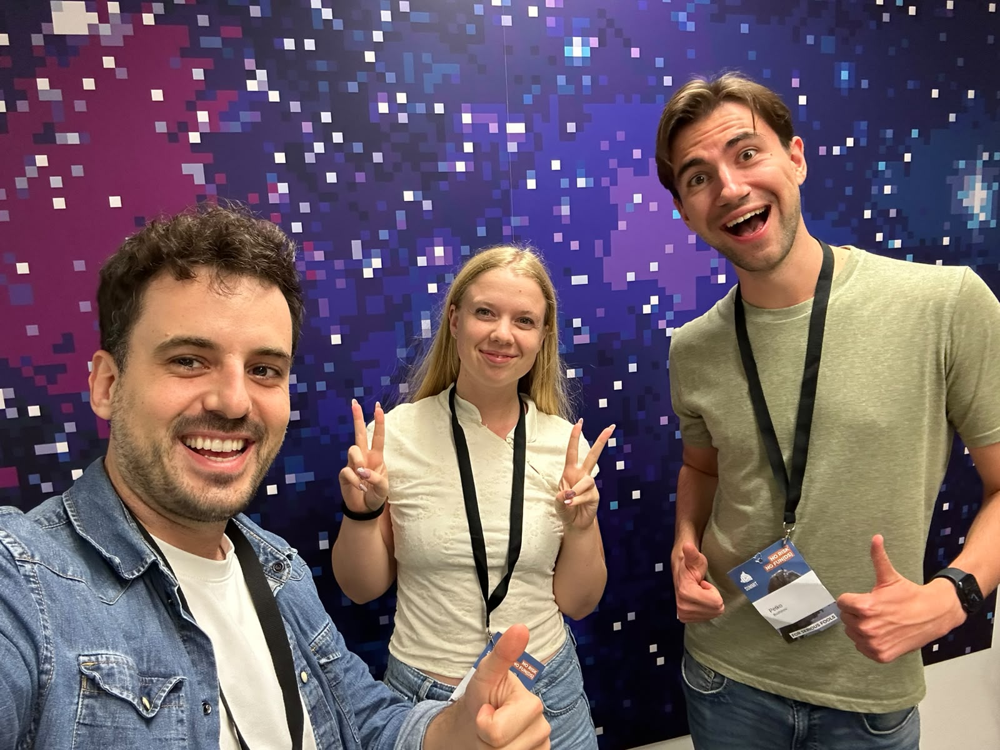

Implemented in code
Input normalisation → geocoding → ride search / join
Next implementation
Guided clarification + difficult-name matching
Summit Sprint Hackathon · 14 October 2026
A voice assistant that connects spoken addresses
to suitable rides in mobie.
Presented by
The Senior Association of mobie Users
About 10 seconds. Introduce the team: The Senior Association of mobie Users. Our goal is to make finding a ride accessible through a phone conversation, with special attention to difficult street and town names. Introduce the team members on the next slide, then continue with the passenger and driver use case.
Official mobie logo downloaded unchanged from mobie.at on 15 October 2026. Local asset: mobie-logo.svg.
The people behind the project
The Senior Association
of mobie Users

About 15 seconds. Introduce Louis Attendu, Erika Beteg and Petko Bozhinov. Team name: The Senior Association of mobie Users. Team photograph supplied by the user and stored alongside the presentation as team-photo.jpeg. Names are listed without assigning positions in the photograph.
The use case
A passenger describes a journey.
The assistant finds a ride and sends a request.
„Ich möchte von
Villagarten 4 in Steyregg
zur Bethlehemstraße
in Linz fahren.“
One phone conversation. Two people. A real request in mobie staging.
About 35 seconds. Start with the passenger's goal. The driver has already created an offered ride using a separate approved staging account and vehicle. The passenger calls the Fonio assistant; the driver later approves the request in the app. Never describe a pending request as an accepted ride.
The example route comes from the challenge brief. It is a scenario, not evidence that a call or booking has succeeded. The implementation currently uses the passenger account signed into the local starter.
Source: mobie challenge brief.
The overall architecture
Fonio reaches our app through ngrok. Our app connects Mapbox and mobie.
Implemented in code
Input normalisation → geocoding → ride search / join
Next implementation
Guided clarification + difficult-name matching
About 45 seconds. This uses the system-landscape layout from the technical architecture deck: Passenger → Fonio → ngrok → Our app → mobie staging. Mapbox connects above the app, Auth0 provides passenger login below, and the driver offers/approves rides through the staging app. Mapbox and Auth0 connect directly from the app rather than through ngrok. The inbound TripSearchService orchestrates the current app calls. StringProcessingService currently trims/collapses whitespace, validates seats and normalises date/time using Europe/Vienna. It does not implement phonetic or fuzzy address matching. Mapbox currently returns candidates; the trip service takes the first candidate for each address and searches mobie. That is the baseline we aim to improve.
Current remote routes include POST /api/trips/search and POST /api/trips/join. The proposed guided contract uses different routes, including /ride/join; do not imply those guided endpoints exist. Current code retains recent search records in memory. Stateless guided requests, system-sourced correlation and signed selection references remain proposed.
The current join wrapper looks up a recent rideId, submits one seat and passes confirmed=true internally. Spoken consent must be enforced in the assistant; the demo deck does not claim server-side consent binding or full end-to-end verification.
Code evidence: Trip search and join, Input processing, mobie API reference.
The problem · illustrative examples
Three ways a spoken request can lead to the wrong location.
01
Caller input
“Villagarten 4,
Steyregg”
Potential wrong result
Gartenstraße,
Sulz
Check the street within the intended town.
02
Caller input
“Gartenstraße”
Possible locations
A: Gartenstraße, Sulz
B: Gartenstraße, Klaus
Ask which place is intended instead of taking the first match.
03
Caller input
“Steyregg”
System hears
“Steiregg”
Look for similar names, then clarify if needed.
Our goal: the intended street in the intended town, with ambiguity resolved.
About 45 seconds. These are three distinct risks. First, a weak match can substitute both the street and municipality: the proposed candidate must be checked against all supplied components. Second, a street name without enough context can produce several valid places, requiring a targeted question or a short choice. Third, a misheard name can differ slightly from a real town or street name. The planned Levenshtein method on slide 7 helps suggest similar names. A misheard name may also be another real place, so spelling similarity alone cannot prove intent.
All input/result pairings are illustrative, not recorded Fonio transcripts or actual Mapbox responses. The first pair deliberately contrasts two different challenge addresses to illustrate an unacceptable match; it does not claim that Mapbox returned Gartenstraße in Sulz for a Villagarten query. Steyregg/Steiregg illustrates a possible transcription error, not an observed call result. The challenge brief supplies Gartenstraße in both 6832 Sulz and 6833 Klaus.
The strategy is to preserve geographic context, compare candidate components and resolve ambiguity before relying on coordinates. Our agreed unique-match path still advances without an extra address confirmation; the complete passenger trip is read before booking consent so the caller can correct it. A single result or an available ride is not proof of intent. The current baseline picks the first candidate, while this validation policy remains proposed.
Sources: Challenge address examples, String processor scope and error model.
Solutions to issues 01 and 02 · target experience
The town narrows the street search. A short choice resolves several valid matches.
For your starting point and destination.
“What day, what time, and how many people?”
Search for a ride between the two places that fits your plans.
“Shall I send the request?”
Hear the trip, pickup time and driver details before you agree.
02 · Multiple valid options? We offer a short choice and let you decide.
About 50 seconds, then the demo. This slide addresses the first two problems: wrong street/town combinations and multiple valid locations. The funnel explains the staged address approach: identify the town, then the street and house number within it, until the place is precise enough to use. Repeat for starting point and destination. A postcode is helpful but optional. Use details the caller already supplied instead of asking again.
The funnel shows conceptual narrowing, not measured candidate counts or success rates. A clear location match lets the conversation continue. Several plausible matches lead to a short spoken choice, and an unclear match leads to a focused question. Clarify conflicting details rather than silently replacing them.
Then collect date, time and passenger count together. If a suitable ride exists, read the full journey, pickup details and driver information before asking permission to send the request. Allow corrections. If no ride is found, explain that result. The driver still approves the request separately.
This slide describes the target experience, not evidence of a successful live call or booking. Demonstrate only functionality that has actually been exercised. Reference: Guided conversation contract and Fonio setup.
Issue 03 · Levenshtein matching · planned
Count the letters to add, remove or change. Fewer changes mean a closer spelling.
What the system hears
Steiregg
A similar real town name
Steyregg
One letter changes: i becomes y.
An illustrative suggestion, not an automatic correction.
Compare the heard name with real town or street names.
Use the postcode when known. Look for streets within the chosen town.
“Did you mean Steyregg?”
Let the caller resolve uncertain matches.
Similar spelling helps suggest a place. It cannot prove what the caller meant.
About 45 seconds. This addresses problem 03: a misheard town or street name. Levenshtein distance is the smallest number of single-character insertions, deletions and substitutions needed to turn one string into another. After applying the same basic text normalisation to both strings, the illustrative Steiregg/Steyregg pair differs by one substitution. Smaller distance means closer spelling, not a probability that the address is correct.
This is a planned matching step. The checked-out address-elaboration branch has no Levenshtein implementation in StringProcessingService or AddressResolutionService. It needs a source of real candidate names to compare; edit distance alone cannot generate or geocode an address. If an initial Mapbox query yields no candidates, candidate retrieval or bounded variants need a separate design. Compare street names within the resolved town and respect supplied postcode evidence. Do not let similarity override conflicting geographic details.
Use this as a supporting signal for suggestions, with targeted clarification for uncertain or changed names. A wrong transcription can exactly match another real place, so even distance zero is not proof of intent. Levenshtein compares spelling and does not model pronunciation, dialect or audio recognition. Thresholds and false corrections need evaluation on real examples before claiming improved performance.
Method definition: NIST Dictionary of Algorithms and Data Structures: Levenshtein distance. Code checked: src/string-processing/string-processing.service.ts and src/voice/services/address-resolution.service.ts.